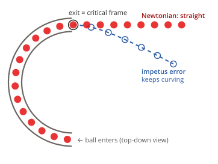
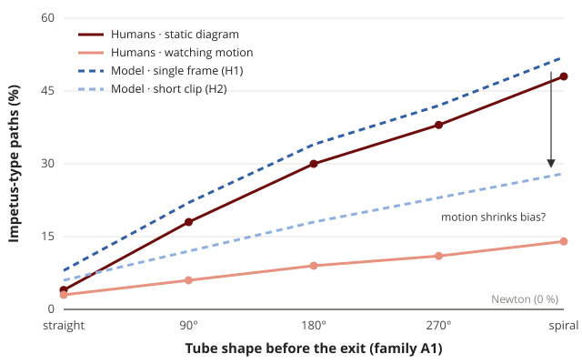

Do video world models get motion wrong in the same way humans do, and do their errors shrink when they see motion instead of a still frame, as people's do?
From a single frame, models keep the tube's curve after the exit (impetus) and drop objects too straight from a moving trolley. A short clip shrinks the bias, as watching motion does for humans.
Bob size should not change the period; a "heavier swings faster" belief would. Period should grow as √L; we expect a shallower slope, worst at an untrained length.
Model errors match human errors below the human–human ceiling, except on bias items. On the chaotic double pendulum samples are over-confident. Models judge straight exits better than they generate them.
Human volunteers · V-JEPA 2 (surprise score) · LTX-Video 2B and Wan 2.2 5B (generation) · Qwen2.5-VL-7B (static diagrams)
Ball moves up to the critical moment: tube exit, release, cut
The critical frame alone; no velocity information
The context clip, 2 frames past the critical moment
Models generate it; for humans the ball goes behind a screen
Red ball found by colour threshold
Newtonian · noisy-Newton · human-like bias · non-human failure
Browser session, about 15 min. Pick the path from 4 drawn options (static), then click where the ball comes out from behind a screen (dynamic), then "which looks natural?" (2AFC). Static always first.
LTX-Video 2B and Wan 2.2 5B continue the single frame or the short clip, neutral prompt. 4 samples per item and mode, 16 for the double pendulum.
No generation: V-JEPA 2 surprise and diffusion likelihood on correct vs anomalous clips. Qwen2.5-VL answers the 4-option diagram.
| Family | Event · factors | # |
|---|---|---|
| A1 Curved tube | straight, 90°, 180°, 270°, spiral × 2 speeds × 3 seeds | 30 |
| A2 String snaps | 4 release angles × 3 seeds | 12 |
| A3 Pendulum cut | turning point, descending, bottom, ascending × 3 | 12 |
| B1 Trolley drop | 4 speeds (incl. stopped) × 3 seeds | 12 |
| C1 Pendulum | 5 lengths (1 out of range) × small / big bob × 2 | 20 |
| D1 Double pendulum | low (regular) / high (chaotic) energy × 3 starts | 6 |
| Total | each with single-frame and short-clip conditioning | 92 |
40–60 volunteers (30 minimum) · one 15-min session · jsPsych on GitHub Pages, data to OSF
92 items × 2 modes × 4 samples + D1 extra ≈ 900 clips

Real item A1, 180° tube, drawn from its data file: correct straight exit (red) vs the impetus error (dashed blue). 480 × 320 px, 16 fps, exact physics. 2D for humans; a Blender 3D copy of A1, A3, B1, C1 for the models, with identical ball positions.

Illustrative curves, not data. Predictions H1 and H2 for the curved tube.
x: tube shape, 5 levels · y: share of paths coded as still curving (McCloskey coding), from signed post-exit curvature κ · one line per agent × conditioning
κ ~ agent × conditioning × tube × speed + (1|item) Bootstrap CIs over items · item-level human–model error correlation vs split-half human ceiling
For each model × item, compare sample likelihood under noisy-Newton, noisy-Newton + human bias, and non-physical failure (freeze, vanish, stereotyped motion). Report the share each explains best.
Same logic for C1 (period ratio big / small bob, log–log slope vs L) and D1 (CRPS, spread–skill vs a 50-run noisy-Newton ensemble).
Impetus and straight-down errors on the static diagrams, as in McCloskey et al. (1980).
Much closer to Newton when watching the clip: the static / dynamic dissociation.
Curve after the exit from a single frame (H1); bob size shifts the period (H4).
Open question: does the short clip remove the bias (H2), or does the learned prior beat the evidence?
V-JEPA 2 and diffusion likelihood pick the straight path more often than generators draw it (H8).
The VLM on diagrams completes the "reasoning" corner of the comparison.
If a model's errors fall in the human-like bias class, it learned the same visual prior people did. If they are non-human failures, human-level accuracy hides different strategies (cf. Li et al., ECCV 2026). Either way the taxonomy shows where it fails: physics, noise, prior or plain breakdown.
2D generator with exact physics, plus a Blender script for the 3D copies
V-JEPA 2 surprise; LTX single frame vs clip, 4 samples (≈ 240 clips); time Wan 5B on a T4
Curvature after the exit, pendulum period, first plots
Model curves more than the straight-tube control, or bob size shifts period by > 5 %, or errors are clearly non-human
Own computer plus free Kaggle GPUs (about 30 h a week). The €20 reserve buys ≈ 35–40 h of a rented RTX 4090 if Wan 5B is too slow. Human study: volunteers, free hosting.
Pilot by early November 2026 · pre-registration and human study Nov–Dec · full model runs Nov–Jan · short paper for CogSci 2027 (Feb), full paper for NeurIPS 2027 (May).
Li et al. (ECCV 2026) already show "human accuracy, non-human errors". Move fast and lead with the bias paradigms and generated trajectories, which nobody has tested.